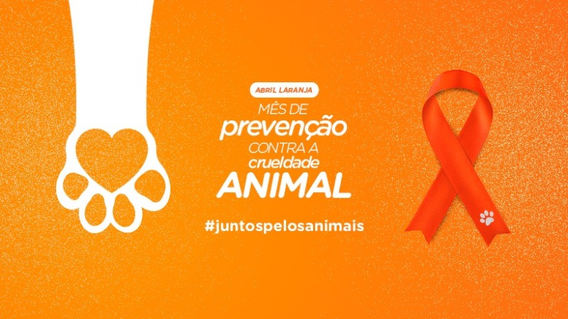

Abril Laranja
Conscientização contra a crueldade animal
Menu
Mensagem:
Proteja os animais
O que é o Abril Laranja?
O Abril Laranja é uma campanha internacional dedicada à conscientização da população sobre a importância de proteger os animais contra qualquer forma de maus-tratos, abandono e negligência.
Essa iniciativa busca chamar a atenção da sociedade para a necessidade de garantir o bem-estar animal, promovendo mais respeito, empatia e responsabilidade no convívio com os animais.
Durante todo esse mês, são realizadas diversas ações educativas e informativas, como palestras, campanhas nas redes sociais, distribuição de materiais explicativos e atividades em escolas
e comunidades. Essas ações têm como objetivo orientar as pessoas sobre os cuidados básicos que os animais precisam, como alimentação adequada, abrigo seguro, acompanhamento veterinário
e, principalmente, carinho e atenção.
Além disso, o Abril Laranja também reforça a importância de denunciar casos de maus-tratos, mostrando que esse tipo de atitude é crime e deve ser combatido. A campanha incentiva ainda a
adoção responsável, conscientizando as pessoas sobre o compromisso necessário ao adotar um animal, evitando decisões impulsivas que podem levar ao abandono.
Dessa forma, o Abril Laranja não apenas informa, mas também mobiliza a sociedade, incentivando mudanças de comportamento e promovendo uma cultura de respeito e proteção aos animais, contribuindo
para um mundo mais justo e seguro para todos os seres vivos.

Por que isso é importante?
Essa questão é extremamente importante porque, infelizmente, muitos animais sofrem diariamente com abandono, fome, doenças e diferentes formas de violência. Ao serem deixados nas ruas ou em
situações de risco, eles ficam expostos a perigos como acidentes, falta de alimento, ausência de cuidados médicos e maus-tratos, o que compromete seriamente sua saúde e qualidade de vida.
Grande parte desse problema está relacionada à falta de informação e conscientização da população. Muitas pessoas ainda não compreendem a responsabilidade que envolve cuidar de um
animal, tratando-o como algo descartável ou tomando decisões impulsivas, como adotar sem planejamento e depois abandonar. Além disso, há desconhecimento sobre leis de proteção animal e sobre
a importância de denunciar casos de maus-tratos.
Por isso, informar e educar a sociedade é fundamental. Quando as pessoas passam a entender melhor as necessidades dos animais e a importância do respeito e do cuidado, atitudes mais
responsáveis começam a surgir. Isso contribui para a redução do abandono, melhora as condições de vida dos animais e fortalece uma cultura de empatia e proteção.
- Promove empatia
- Combate maus-tratos
- Incentiva adoção responsável
- Divulga leis de proteção

Como podemos ajudar?
- Adotar em vez de comprar
- Denunciar maus-tratos
- Cuidar bem dos animais
- Compartilhar informações
Pequenas atitudes fazem uma grande diferença na vida dos animais.
Alunos: Sebastian A. S. Diaz e Matheus F. Mation
Projeto escolar - Abril Laranja
Proteção animal é responsabilidade de todos